9 Session 9: How a Neural Network Learns, and Why Training Fails
Sources for this page: d2l.ai, Dive into Deep Learning, Multilayer Perceptrons — CC BY-SA 4.0; Wikipedia, Backpropagation, Stochastic gradient descent, Overfitting, Vanishing gradient problem, Regularization (mathematics), Dropout (neural networks), Early stopping — CC BY-SA 4.0. Datasets: the Breast Cancer Wisconsin (Diagnostic) data set (UCI Machine Learning Repository, CC BY 4.0), loaded through scikit-learn; the GB1 fitness landscape of Wu, Dai, Olson, Lloyd-Smith & Sun (2016), eLife 5:e16965 (CC BY 4.0), as distributed by the FLIP benchmark (Dallago et al. 2021, bioRxiv); Session 8’s UniProt subcellular-localisation data. Ioffe & Szegedy (2015), “Batch Normalization,” arXiv:1502.03167; Srivastava et al. (2014), “Dropout,” JMLR 15:1929-1958; Kingma & Ba (2015), “Adam: A Method for Stochastic Optimization,” arXiv:1412.6980; Rost & Sander (1993), J. Mol. Biol. 232:584-599 and PNAS 90:7558-7562 (the PHD method). 3Blue1Brown’s neural-network and cross-entropy videos are embedded as further watching. The regression setup (linear baseline vs. 64/64 network, L2 and dropout), the vanishing-gradient demonstration and the tiny hand-computed backpropagation example follow ideas from Magnus Ekman’s Learning Deep Learning (ch. 3, 5 and 6 slide decks in slides/), a copyrighted, not openly licensed textbook, credited here as an internal source and not linked. Every number below was computed in code and read back from the notebook’s output.
Notebook: Session 9 — How a neural network learns, and why training fails, in code — the code behind this page. Download it to run it yourself.
9.1 Learning goals
By the end of this session you should be able to:
- describe the training cycle (predictions → loss → gradients → update) and write the standard PyTorch training loop;
- explain backpropagation as the chain rule applied from the loss backwards through the network;
- choose the loss for classification (cross-entropy) and regression (mean squared error), and explain why confident mistakes are expensive;
- recognise three common ways training fails (equal starting weights, vanishing gradients, a poor optimiser or learning rate) and name the fix for each;
- judge when a hidden layer pays off, and why a very large network can lose to a simple baseline;
- use early stopping, weight decay and dropout against overfitting, and evaluate the result honestly.
Sessions 7, 8 and 9 form one progression. Session 7 asked what a neural network can represent. Session 8 asked how we know whether a model generalises. This session asks how we actually train a network, and why training sometimes succeeds and sometimes fails.
The starting point is concrete. In Session 8 we built a network, but its weights were random, so its predictions were no better than chance. We had labelled examples, so how do we turn the random weights into useful predictions? This session answers that question with four datasets. Breast-cancer biopsies introduce the training loop, and a protein fitness landscape shows why training fails and when a hidden layer pays off. Session 8’s protein localisation data show what happens when a network is too large for its data, and blood-cell images are used in the lab.
9.2 From an untrained network to a trained network
We start with a problem on which training works well. The Wisconsin breast-cancer dataset has 569 fine-needle biopsies, each described by 30 features measured on microscope images of the cell nuclei (radius, texture, perimeter, smoothness, concavity and so on). Each biopsy is labelled malignant (212) or benign (357). We split the data into 398 training, 85 validation and 86 test biopsies, and standardise the features with statistics from the training set only (Session 8). Table 9.1 summarises the data.
| Examples | 569 fine-needle biopsies of breast lumps |
| Label | malignant (212) or benign (357) |
| Features | 30: ten measurements of the cell nuclei in the image (radius, texture, perimeter, area, smoothness, compactness, concavity, concave points, symmetry, fractal dimension), each given as the mean, the standard error and the worst (largest) value over the nuclei |
| Split | training 398 (148 malignant), validation 85 (32), test 86 (32); stratified, so each set has the same share of malignant biopsies |
| Preprocessing | each feature standardised to mean 0 and standard deviation 1, with the mean and standard deviation of the training set |
Some features separate the two classes well on their own, others hardly at all (Figure 9.1):
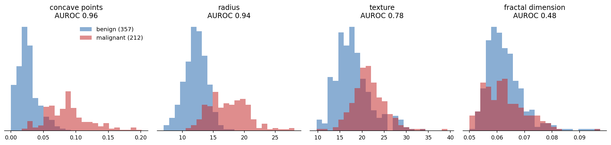
The network reads all 30 standardised features at once. It has one hidden layer of 16 ReLU units and one output unit, whose sigmoid gives the probability that the biopsy is malignant (Figure 9.2). Counting the biases, it has 513 weights to learn.
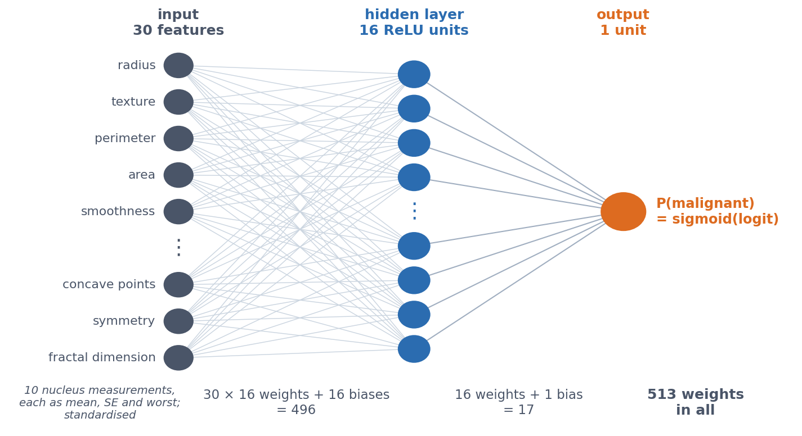
BCEWithLogitsLoss applies the sigmoid itself.
Training the network means repeating one cycle over and over:
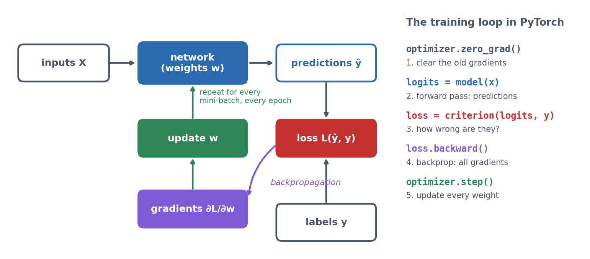
Before training, the network’s predicted probabilities all sit close to 0.5, so the network is guessing (validation accuracy 0.659, roughly the share of benign biopsies). After 100 passes through the training data, the benign biopsies are pushed towards 0 and the malignant ones towards 1:
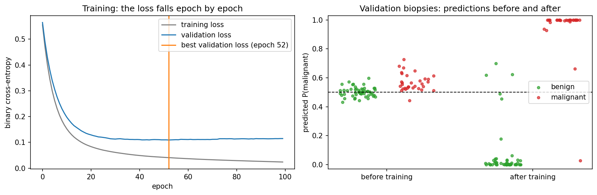
On the test set the trained network reaches an accuracy of 0.953, an MCC of 0.900 and an AUROC of 0.984. Only 2 benign biopsies are called malignant, and only 2 malignant ones are missed.
Was the hidden layer needed? Not here. We compare the models by 5-fold cross-validation, because a single test split of 86 biopsies is too noisy for this comparison (Session 8). Logistic regression with 31 weights and the network with 513 both reach an accuracy of 0.979. Malignant and benign nuclei differ mainly in size and shape, and a weighted sum of those measurements already separates them. Training therefore works, but the extra capacity has nothing to add. Section 9.6 shows a dataset where it does.
9.3 How backpropagation finds every gradient
Gradient descent (Session 1, Session 7) needs \(\partial L / \partial w\), the slope of the loss, for every weight. For a single layer that was easy. But what about a weight buried several layers inside a network, whose effect on the loss passes through every later layer? The tiny network below shows how backpropagation answers this question.
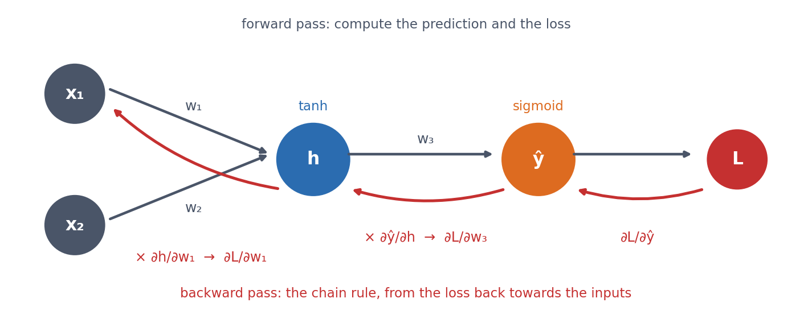
For \(w_1\), the chain rule multiplies the local slopes along the path from the loss back to the weight:
\[ \frac{\partial L}{\partial w_1} = \frac{\partial L}{\partial \hat y}\;\frac{\partial \hat y}{\partial h}\;\frac{\partial h}{\partial w_1} \]
Backpropagation is an efficient application of the chain rule, from the loss backwards through the network. Each layer’s “error signal” is computed once and reused for all the weights feeding into it, so computing all the gradients costs about as much as one forward pass. Without that reuse, networks with thousands or millions of weights could not be trained.
In practice, you do not have to differentiate networks by hand. The notebook does it once for the tiny network above, working out the five gradients with the chain rule. It then builds the same network in PyTorch and calls loss.backward(), and all five gradients agree to eight decimal places. From then on, PyTorch’s autograd does the work for any network.
Putting these pieces together gives the training loop that you will write yourself in the lab:
for epoch in range(n_epochs):
for xb, yb in loader: # one mini-batch at a time
optimizer.zero_grad() # 1. clear the old gradients
logits = model(xb) # 2. forward pass
loss = criterion(logits, yb) # 3. how wrong is it?
loss.backward() # 4. backpropagation: every gradient
optimizer.step() # 5. update every weightReal training uses mini-batches. A DataLoader shuffles the training set every epoch and serves it in small batches (here 32 biopsies), and the weights are updated after every batch. Each epoch (one pass through the training data) therefore consists of many cheap, slightly noisy steps instead of one expensive exact step. This is stochastic gradient descent. After every epoch we measure the validation loss and keep the best weights (early stopping).
9.3.1 Further watching
Backpropagation, intuitively (3Blue1Brown, Deep Learning ch. 3): the same chain-rule idea as above, built up visually one layer at a time. (Chapter 1, But what is a neural network?, is embedded on Session 7.)
Optional video: Backpropagation calculus (3Blue1Brown, Deep Learning ch. 4, 10 min), the full chain-rule mechanics for a general multi-layer network.
9.4 Which loss to minimise
The training loop minimises a loss, and the loss decides what “wrong” means. For regression we use the mean squared error between prediction and target. For classification we use cross-entropy, which for one example is the negative log of the probability that the model gave the true class,
\[ \text{CE} = -\log p(\text{true class}), \]
that is, its surprise in the language of Session 1. Averaged over a dataset, cross-entropy is the negative log-likelihood, so minimising it is the same as maximum likelihood (Session 1).
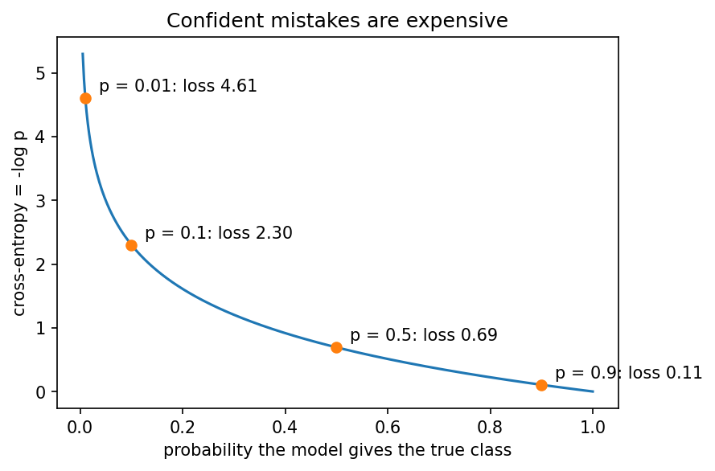
Cross-entropy punishes a confident mistake far more than hedging. A probability of 0.9 on the true class costs 0.105, but a probability of 0.01 costs 4.6, over 40 times more. This is what pushes a classifier to separate the classes, as in the right panel of the breast-cancer figure. In PyTorch, nn.BCEWithLogitsLoss (for two classes) and nn.CrossEntropyLoss (for more classes) combine the sigmoid or log-softmax with this loss in one numerically stable step, so the model outputs raw logits (Session 8). The notebook checks both by hand. The lab compares cross-entropy with the mean squared and mean absolute error for the same blood-cell classifier, and cross-entropy trains best.
Cross-entropy is built from the relative entropy (Kullback-Leibler divergence) of Session 4. It is the entropy of the true distribution plus the extra cost of describing it with the model’s distribution \(Q\): \(H(P, Q) = H(P) + D_{\text{KL}}(P \| Q)\). Since \(H(P)\) does not depend on the model, minimising cross-entropy is the same as minimising the KL divergence between the model’s predictions and the true labels.
Optional video: But what is cross-entropy? (3Blue1Brown, Compression is Intelligence part 2, 34 min), cross-entropy from the information-theory side, built up from first principles.
9.5 Why training fails
The training loop always runs, but it does not always learn. This section shows three common failures. Each is produced by changing one thing in a network that predicts the fitness of protein variants, using the GB1 data of Section 9.6 (20,000 training variants, each described by the one-hot encoding of four residues). We measure the validation error as the mean absolute error (MAE) of the predicted \(\log_{10}\) fitness. As reference points, predicting the training mean for every variant gives an MAE of 0.488, and a working 64/64 network reaches 0.250 within 20 epochs.
The full story is in Section 9.6; this is what you need for this section.
| Protein | GB1, a small antibody-binding (IgG) domain of the bacterial protein G |
| Variants | all 20⁴ = 160,000 combinations of amino acids at four positions (V39, D40, G41, V54); 149,361 have a measured value (Wu et al., 2016) |
| Label (regression) | how well the variant binds IgG, relative to the wild type VDGV (= 1), as \(\log_{10}(\text{fitness} + 0.001)\) |
| Input | the one-hot encoding of the four residues (Session 7): 4 × 20 = 80 numbers |
| Split | 20,000 variants for training, 5,000 for validation, 20,000 for testing |
| Network | “64/64”: two hidden layers of 64 units each and one output, 9,409 weights |
| Reference points (validation MAE) | 0.488 predicting the training mean; 0.371 the additive (linear) model; 0.250 the working 64/64 network |
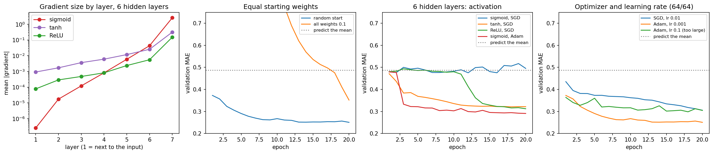
9.5.1 Failure 1: every weight starts the same
- Observation. Start all weights at 0.1 instead of small random numbers. After 20 epochs the validation MAE is 0.352, little better than the additive (linear) model’s 0.371, against 0.250 from a random start.
- Why? Every hidden unit computes the same thing and receives the same gradient, so the units stay identical for ever. After training, all 64 units in the first layer are still exactly the same, so 64 units behave like one.
- Fix. Random initialisation breaks the symmetry, and PyTorch does this by default.
9.5.2 Failure 2: deep sigmoid networks, and vanishing gradients
- Observation. A network with six hidden layers of sigmoid units, trained with plain stochastic gradient descent (SGD), does not learn at all. Its validation MAE stays around 0.48, the error of predicting the mean. The same network with tanh (0.321) or ReLU (0.312) does learn.
- Why? The answer lies in the activation functions and the chain rule, explained below.
The chain rule, one layer at a time. In Section 9.3, the gradient for a weight was a product of local slopes along the path from the loss back to that weight. In a deep network, this path passes through every later layer. To see what happens, take the simplest deep network: one unit per layer, six hidden layers. Unit \(k\) computes \(z_k = w_k h_{k-1}\) and passes on \(h_k = f(z_k)\), where \(f\) is the activation function and \(h_0 = x\) is the input. The gradient for the first weight is then
\[ \frac{\partial L}{\partial w_1} = \frac{\partial L}{\partial h_6}\; \underbrace{f'(z_6)\,w_6}_{\text{layer 6}}\; \underbrace{f'(z_5)\,w_5}_{\text{layer 5}}\;\cdots\; \underbrace{f'(z_2)\,w_2}_{\text{layer 2}}\; f'(z_1)\,x . \]
Each layer that the gradient passes through on its way back contributes two factors: its weight \(w_k\) and the slope of its activation function at that unit’s weighted sum, \(f'(z_k)\). In a real network each layer has many units and the gradient is a sum over many such paths, but every path is a product of this kind. A product of many numbers smaller than 1 shrinks exponentially with its length. The size of those slopes therefore decides whether a gradient survives the trip back (Figure 9.8):
- Sigmoid. Its slope is at most 0.25, at \(z = 0\), and falls quickly on both sides (about 0.20 at \(|z| = 1\) and below 0.01 at \(|z| = 6\)). Even in the best case, six layers therefore multiply the gradient by \(0.25^6 \approx 0.00024\); with units away from \(z = 0\), it shrinks even faster.
- Tanh. Its slope is 1 at \(z = 0\), four times larger than sigmoid’s, so the gradient shrinks more slowly. But it still falls in both tails (0.42 at \(|z| = 1\)), so units that are far from zero still block the gradient.
- ReLU. Its slope is exactly 1 for every unit that is active (\(z > 0\)), so the activation does not shrink the gradient at all along active paths. For inactive units it is exactly 0, and those paths carry no gradient.
The weights \(w_k\) in the product matter as well. Large weights can make the gradient explode instead, which is why initialisation scales them to each layer’s size. Measured in the freshly initialised network, the first layer’s gradient is about ten million times smaller than the last layer’s with sigmoid, against a few hundred to two thousand times smaller with tanh and ReLU (panel 1 of Figure 9.7). With sigmoid, the first layers barely move, so the network cannot learn.
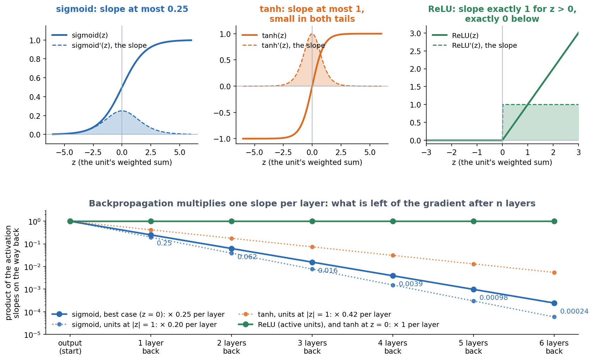
- Fix. Change what the gradient has to pass through. The options are ReLU-like activations, initialisation scaled to each layer’s size, standardised inputs, normalisation layers such as batch normalisation (Ioffe & Szegedy, 2015), and, in later sessions, residual connections. Adam (below) gets the sigmoid network to 0.291 by enlarging the tiny steps, but that is a workaround, not a cure, because the gradients still vanish.
ReLU (Session 8) never shrinks the gradient for positive inputs, which is why it is the default for hidden layers. Its flat side, however, can leave a unit with no gradient at all (“dying ReLU”, the first discussion problem). Vanishing gradients come back in very deep CNNs (Session 10), recurrent networks and Transformers (Session 11), and each of those sessions shows the architectural fix.
9.5.3 Failure 3: the optimiser and the learning rate
- Observation. The same 64/64 network reaches a validation MAE of 0.250 with Adam (learning rate 0.001), but only 0.305 with plain SGD in the same 20 epochs. With Adam and a learning rate of 0.1, the error jumps around and never gets below 0.298.
- Why? The learning rate sets the step size of gradient descent (Session 1). A rate that is too small is slow, and one that is too large overshoots the minimum. Plain SGD also uses the same step size for every weight, which Adam does not (next subsection).
- Fix. Start with Adam and a learning rate around \(10^{-3}\), and always watch the validation curve.
9.5.4 Momentum and Adam: why an optimiser can beat plain stochastic gradient descent
Plain SGD takes each step straight down the gradient of the current mini-batch. This becomes a problem in a long, narrow valley of the loss, which is common because some weights affect the loss far more than others. In such a valley the gradient points mostly across the valley. A learning rate large enough to make progress along the valley makes SGD zigzag from wall to wall, while a safe one only crawls. The three optimisers differ in how they deal with this:
- Stochastic gradient descent (SGD) follows the current gradient.
- Momentum follows an average of the recent gradients, like a heavy ball rolling downhill. Directions that agree from step to step add up, and the zigzag across the valley cancels out.
- Adam (Kingma & Ba, 2015) combines momentum with a separate step size for every weight, scaled to the size of that weight’s recent gradients. Its default learning rate of \(10^{-3}\) works for many networks.
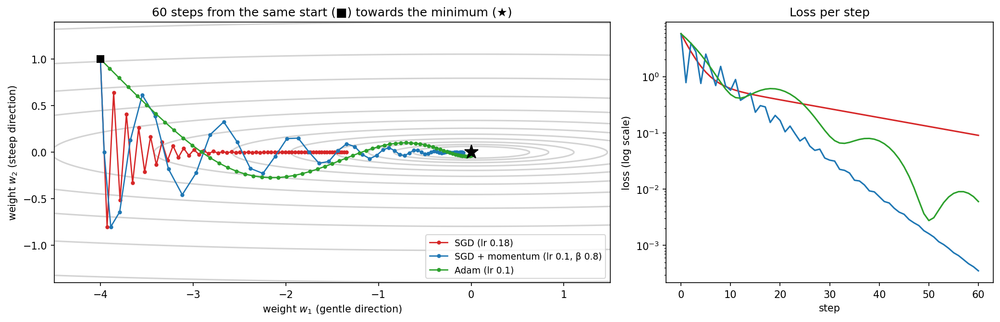
How Adam sets a step for each weight. For every weight, Adam keeps two running averages over the recent mini-batches: \(m\), the average gradient \(g\) (the momentum), and \(v\), the average squared gradient. After each mini-batch it updates them and then the weight:
\[ m \leftarrow \beta_1 m + (1-\beta_1)\,g, \qquad v \leftarrow \beta_2 v + (1-\beta_2)\,g^2, \qquad w \leftarrow w - \eta\,\frac{m}{\sqrt{v} + \epsilon}. \]
The defaults are \(\beta_1 = 0.9\), which averages over roughly the last 10 steps, \(\beta_2 = 0.999\), roughly the last 1,000 steps, and a tiny \(\epsilon\) that prevents division by zero. Dividing by \(\sqrt{v}\) is the key step. If a weight’s gradient keeps the same sign, \(m/\sqrt{v}\) is close to 1, so the weight moves by about \(\eta\) per step, whatever the size of its gradient. A weight with tiny gradients, like those in the first layers of the deep sigmoid network of Failure 2, therefore takes steps as large as a weight with large gradients. If a weight’s gradient keeps changing sign, as across the valley in Figure 9.9, the positive and negative gradients cancel in \(m\) and the weight barely moves. (Adam also corrects \(m\) and \(v\) for starting at zero, which matters only in the first steps.)
A short history. Adam is the latest step in a long line of ideas (Table 9.2). Gradient descent itself is almost two centuries old. The two ideas that Adam combines, momentum and a separate step size for each weight, were developed separately, and Adam’s contribution was to put them together with sensible defaults.
| Year | Method | The idea |
|---|---|---|
| 1847 | Gradient descent (Cauchy) | Step downhill along the gradient; proposed for solving systems of equations in astronomy |
| 1951 | Stochastic approximation (Robbins & Monro) | Steps based on noisy estimates of the gradient still reach the minimum if the step size shrinks over time: the theory behind SGD |
| 1964 | Momentum, the “heavy ball” (Polyak) | Follow an average of the recent gradients, so that consistent directions build up speed |
| 1986 | Backpropagation (Rumelhart, Hinton & Williams) | Gradients for every weight of a multi-layer network, trained with gradient descent plus momentum |
| 2011 | AdaGrad (Duchi, Hazan & Singer) | A separate step size for each weight: divide by the square root of the sum of all its past squared gradients. Rare features get large steps, but all steps shrink towards zero over time |
| 2012 | RMSProp (Hinton, in a lecture course; never published as a paper) | Replace AdaGrad’s sum by a running average, so that the steps no longer die out |
| 2015 | Adam (Kingma & Ba) | RMSProp’s step sizes plus momentum, with a correction for the start; it became the default, and the paper is one of the most cited in all of science |
| 2019 | AdamW (Loshchilov & Hutter) | Apply weight decay (Section 9.8.2) directly to the weights instead of through the gradient, where Adam’s division by \(\sqrt{v}\) would weaken it; the usual choice for training Transformers (Session 11) |
Adam is a good default, not a universal winner. In the figure, tuned momentum ends even lower, and which optimiser wins depends on the learning rate and the training time. The lab repeats all three failures on blood-cell images, including this comparison, with one rule: change one thing, see what happens, explain why.
9.6 When a hidden layer pays off: epistasis in a protein
The data. GB1 is a small domain of protein G, a bacterial protein that binds antibodies (IgG). Wu et al. (2016) made all 20⁴ = 160,000 combinations of amino acids at four of its positions (V39, D40, G41 and V54), and measured by deep sequencing how well each variant binds IgG. Of these, 149,361 variants have a value. Fitness is relative to the wild type (VDGV = 1) and spans several orders of magnitude, so we predict \(\log_{10}(\text{fitness} + 0.001)\). Each variant is described by the one-hot encoding of its four residues (Session 7), that is, by 4 × 20 = 80 numbers.
Additive or not? A linear model on this encoding gives every amino acid at every position its own weight and adds them up. It is therefore an additive model, exactly like a profile or PSSM (Session 5), in which each position contributes on its own. Such a model cannot represent epistasis, where the effect of a mutation depends on which residues sit at the other positions. Epistasis is the non-additive, XOR-like pattern of Session 7, now as a measured property of a real protein, and a hidden layer can represent it.
We train the models with early stopping on 20,000 variants, with 5,000 for validation and 20,000 for testing:
| Linear (additive) | 64/64 | 64/64 + weight decay (10⁻³) | 64/64 + dropout 0.2 | 256/256 | |
|---|---|---|---|---|---|
| Weights | 81 | 9,409 | 9,409 | 9,409 | 86,785 |
| Train MAE | 0.379 | 0.212 | 0.215 | 0.220 | 0.193 |
| Validation MAE | 0.371 | 0.250 | 0.241 | 0.242 | 0.252 |
| Test MAE | 0.385 | 0.254 | 0.249 | 0.247 | 0.259 |
| Test \(R^2\) | 0.496 | 0.787 | 0.795 | 0.798 | 0.779 |
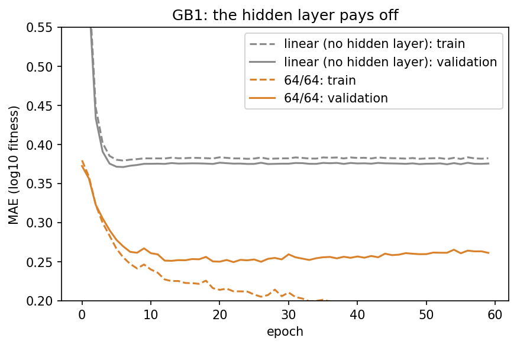
The network explains about 79% of the variance in fitness, against 50% for the additive model. Weight decay and dropout help a little, and a network ten times larger does not help further.
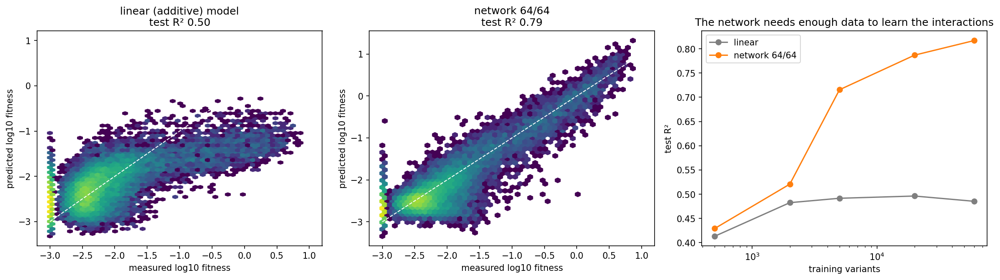
The network needs data to learn the interactions. With 500 training variants the two models are equally good (\(R^2\) 0.43 against 0.41). The interactions exist, but there are too few examples to learn them. From a few thousand variants on, the network pulls away (0.72 at 5,000, 0.82 at 60,000), while the additive model is stuck at about 0.49, however much data it gets. No amount of data lets a sum represent an interaction.
This is Session 7’s lesson, now on real biological data. A hidden layer can represent non-additive relationships, and with enough data, training actually finds them. It is also the limitation of profiles noted in Session 5, since a sum over positions cannot capture interactions, and Session 12 returns to it with pairwise models learned from multiple alignments. The second discussion problem asks where the advantage comes from, by giving the linear model hand-made interaction features for each pair of positions, as Session 7 did for XOR with \(x_1 x_2\).
9.7 Why not make the network enormous?
If larger networks can represent more, why not always use an enormous one? Session 8’s protein-localisation network answers that question. It has 3000 inputs (150 residues, one-hot), a hidden layer of 64 units and 5 outputs, 192,389 weights in all, and it is trained on only 486 proteins of the homology-aware split.
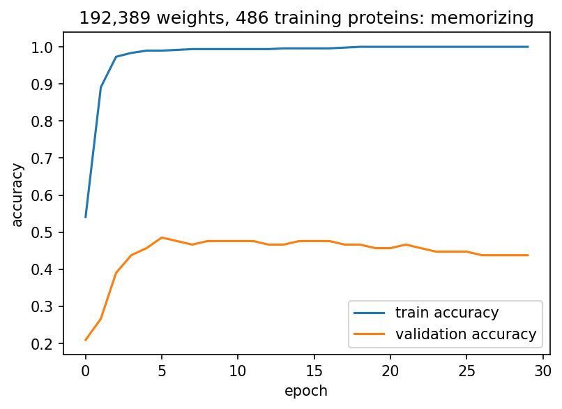
Training accuracy reaches 1.000, so the network memorises every training protein. Validation accuracy, in contrast, peaks at 0.486 after five epochs and then falls, to 0.438 by epoch 29. This is overfitting in its plainest form. With far more freedom than data, the network learns the idiosyncrasies of the training sequences instead of the general signal.
Moreover, the simple baseline wins, as the test set (used once) shows:
| Metric | Untrained network (Session 8, val) | Trained network (test) | Logistic regression (test) |
|---|---|---|---|
| Accuracy | 0.181 | 0.514 | 0.569 |
| F1 | 0.124 | 0.493 | — |
| MCC | −0.027 | 0.394 | 0.461 |
| AUROC | 0.474 | 0.831 | 0.849 |
Training works, since every number is far above chance, but the linear model is better. Before believing that a bigger model is better, always compare it against a simple baseline.
9.8 What can we do about overfitting?
There are several remedies:
- More data. The most reliable fix, and often the only one that really helps.
- A smaller model, or a better architecture. Fewer weights for the same input. Session 10’s convolutional network needs 19,237 weights instead of 192,389.
- Early stopping. Keep the weights from the epoch with the best validation score (below).
- Weight decay (L2) and L1 regularisation. Add a penalty for large weights to the loss (below).
- Dropout. Randomly switch off a fraction of the units in every training step, so the network cannot rely on any single unit (below).
Applied to the localisation network, however, dropout and weight decay do not beat early stopping alone (best validation accuracy 0.476 against 0.486). Training accuracy still reaches 1.000 whatever we do, because with 192,389 weights and 486 examples the network can always memorise. Regularisation is therefore not a substitute for enough data. The following subsections explain how the remedies work.
9.8.1 Early stopping: when to stop training
The two curves of a training run answer two different questions:
- The training loss tells you whether optimisation is working. If it does not fall, something in the previous sections is wrong (initialisation, gradients, learning rate).
- The validation loss tells you whether further optimisation still helps generalisation. When it stops falling while the training loss keeps going down, the network has started to fit the training set rather than the problem.
For the breast-cancer biopsies the validation loss levels off after about 50 epochs while the training loss keeps falling (the first figure of this page). For protein localisation, training accuracy reaches 1.000 within a few epochs, while validation accuracy peaks at 0.486 in epoch 5 and then falls. Early stopping keeps the weights from the epoch with the best validation score. It costs nothing and is used in every training loop of this course. Because the epoch is chosen on the validation set, however, only the test set, used once, gives an honest estimate (Session 8).
9.8.2 Penalising large weights: L2 and L1
Why large weights are a warning sign. A network that fits noise usually does it with some very large weights. A big weight makes the output jump when its input changes a little, so the network can bend its decision boundary around single training examples, including mislabelled or unusual ones. A network with small weights cannot bend that sharply. Its output changes smoothly with the input, which is what we expect of most biological relationships. Regularisation therefore makes large weights expensive, by adding a penalty for them to the loss:
\[ \text{loss} = \underbrace{\text{cross-entropy}}_{\text{fit the training data}} + \underbrace{\lambda \sum_j w_j^2}_{\text{L2 penalty}} \qquad\text{or}\qquad \text{loss} = \text{cross-entropy} + \underbrace{\lambda \sum_j |w_j|}_{\text{L1 penalty}} \]
The two terms pull in opposite directions. The cross-entropy wants whatever weights fit the training data best. The penalty wants all weights to be zero. Training finds a compromise, and the strength \(\lambda\) sets it. With \(\lambda = 0\) there is no penalty and the network can overfit. With a very large \(\lambda\) every weight is pushed to zero and the network underfits. Like the learning rate, \(\lambda\) is chosen on the validation set, by trying powers of ten. Which powers depends on how the loss is written. PyTorch averages the cross-entropy over the mini-batch, so the penalty competes with a number of order one and \(10^{-5}\) to \(10^{-1}\) is the usual search. scikit-learn, which the notebook uses below, sums the loss over the training examples instead, so the penalty must compete with a number a few hundred times larger, and the \(\lambda\) that wins is larger by about the same factor. Always check which convention a library uses before reusing someone else’s \(\lambda\). Strictly, only the weights need a penalty. A bias shifts a unit’s output, but it does not make the unit more sensitive to its inputs. (PyTorch’s weight_decay penalises the biases too, which rarely matters.)
L2 and L1 differ in how hard they pull on a small weight. Gradient descent sees each penalty through its slope (panels (a) and (b) of Figure 9.13):
- L2 adds \(2\lambda w\) to each weight’s gradient: a pull towards zero in proportion to the weight’s size. At every step each weight therefore loses the same fraction of its value, which is why L2 is also called weight decay. A weight of 2 is pulled 20 times harder than a weight of 0.1, so large weights shrink quickly, while small ones are hardly pulled at all. Weights become small, but almost never exactly zero.
- L1 adds \(\lambda\) (with the sign of \(w\)) to each weight’s gradient: the same pull whatever the weight’s size. A weight of 0.1 is pulled as hard as a weight of 2. A weight that does little for the fit cannot resist this constant pull and is driven to zero, which removes its input from the model. L1 therefore selects features. Whether the weight reaches exactly zero depends on the solver: scikit-learn’s reaches it and stays there, while plain gradient descent steps past zero and back, leaving a weight that is tiny rather than empty. For feature selection in PyTorch you therefore have to treat anything below a small threshold as zero yourself.
Panel (c) of Figure 9.13 shows the same difference with two weights. Each contour is a set of weights with the same cross-entropy, and the star is the best fit without a penalty. A penalty is equivalent to a budget for the weights: L2 allows any point inside the circle, L1 any point inside the diamond. The best point within the budget is where the lowest contour touches the boundary. For the circle, that is usually a point where both weights are non-zero. For the diamond, it is often a corner, where one weight is exactly zero.
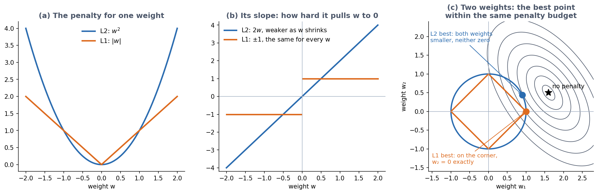
In practice. In PyTorch, L2 is the optimiser’s weight_decay argument, as in the GB1 table above (weight_decay=1e-3). With Adam, this L2 penalty is weakened for weights with large gradients, and torch.optim.AdamW applies the decay directly to the weights instead (Table 9.2). L1 has no such argument in PyTorch: you add lam * sum(p.abs().sum() for p in model.parameters()) to the loss yourself. scikit-learn’s logistic regression, which the notebook uses below, offers both (penalty="l2", the default, or penalty="l1"), with the strength set by C, which is \(1/\lambda\): a small C means a strong penalty. (Combining the two penalties is also common, and is called the elastic net.)
For linear regression the two have their own names, ridge (L2) and lasso (L1). The notebook fits both to the 30 features of the breast-cancer biopsies of Section 9.2. It uses logistic regression, so that every feature has exactly one weight:
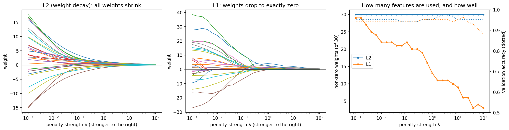
With \(\lambda\) chosen on the validation set, L2 keeps all 30 weights (test accuracy 0.965), while L1 keeps only 6 (test accuracy 0.942). The six are led by the largest nucleus radius and the number of concave points on the cell nuclei. L1 thus gives almost the same accuracy with a model that a pathologist can read. When features are many and examples few, as in gene-expression data with 20,000 genes and a few hundred patients, this is often the main reason to use L1. The third discussion problem checks the same effect by hand.
9.8.3 Dropout
Dropout (Srivastava et al. 2014, JMLR 15:1929-1958) switches off each hidden unit with probability \(p\) (often 0.2-0.5), with a fresh random choice for every mini-batch.
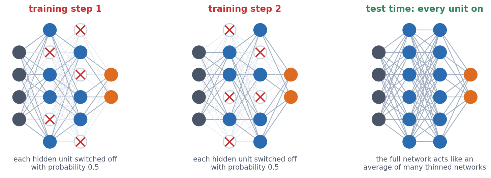
Why should damaging the network help? The answer is that no unit can count on its partners. Without dropout, units can form fragile combinations that fit the quirks of the training set. With dropout, any partner may be missing in the next step, so the information is spread over many units.
Training mode and evaluation mode. Dropout is used only for training, and at evaluation time all units are on. (PyTorch scales the surviving units by \(1/(1-p)\) during training, so nothing else needs to change.) model.train() switches dropout on and model.eval() switches it off, which is why every training loop in this course calls both. If you forget model.eval(), the same input gives a different prediction every time, as the notebook shows.
On GB1, dropout 0.2 raises the training error a little (MAE 0.212 → 0.220) and lowers the test error a little (0.254 → 0.247). The gap narrows, as it should with a regulariser. On the localisation network, dropout does not beat early stopping.
9.9 Is the improvement real?
Session 8’s rules apply to every comparison in this session. Choices (epochs, sizes, regularisation) are made on the validation set, the test set is used once, and every model is compared with a simple baseline. The table puts the three datasets side by side:
| Dataset | Training examples | Network weights | Examples per weight | Network vs. linear |
|---|---|---|---|---|
| Breast cancer | 398 | 513 | 0.78 | tie (CV accuracy 0.979 vs. 0.979) |
| GB1 fitness | 20,000 | 9,409 | 2.1 | network (test \(R^2\) 0.787 vs. 0.496) |
| Protein localisation | 486 | 192,389 | 0.003 | linear (test accuracy 0.514 vs. 0.569) |
- Breast cancer: the network trains well, but a linear model is just as good, because the problem is nearly additive.
- GB1 fitness: the network clearly wins, because the relationship is non-additive (epistasis) and there are enough data to learn it.
- Protein localisation: the network memorises and loses to the baseline, because the data are scarce relative to the model.
Examples per weight is a warning sign, not a strict rule. Modern networks often have more weights than training examples and still generalise, thanks to their architecture, regularisation and the way they are trained. When a model is huge relative to its data, however, check it against a baseline before trusting it.
Next: fewer weights, by using the structure of the data. A fully connected layer has a separate weight for every connection, which is why the localisation network needs 192,389 of them. A sequence, however, has structure, because the same motif means the same thing wherever it occurs. Can we exploit that and use far fewer weights? That is convolution, the topic of Session 10.
9.9.1 Further reading
- Wikipedia, Backpropagation, Stochastic gradient descent (including momentum and Adam), Vanishing gradient problem, Overfitting, Regularization (mathematics), Dropout (neural networks), Early stopping
- d2l.ai, Multilayer Perceptrons
- Ioffe & Szegedy (2015), Batch Normalization
- Kingma & Ba (2015), Adam: A Method for Stochastic Optimization; d2l.ai, Optimization Algorithms (momentum, Adam and others, with interactive examples)
- Ruder (2016), An overview of gradient descent optimization algorithms: momentum, AdaGrad, RMSProp, Adam and their relatives side by side
- Robbins & Monro (1951), A stochastic approximation method, Ann. Math. Stat. 22:400-407; Polyak (1964), Some methods of speeding up the convergence of iteration methods, USSR Comput. Math. Math. Phys. 4:1-17; Duchi, Hazan & Singer (2011), AdaGrad, JMLR 12:2121-2159; Loshchilov & Hutter (2019), Decoupled Weight Decay Regularization (AdamW)
- Rost & Sander (1993), Prediction of protein secondary structure at better than 70% accuracy, J. Mol. Biol. 232:584-599
- UCI Machine Learning Repository, Breast Cancer Wisconsin (Diagnostic)
9.10 Check your understanding
9.11 The course notebook
notebooks/session09-backprop-training-regularization.ipynb computes every number and figure on this page, section by section. It runs the breast-cancer training and shows the predictions before and after training. It works the backpropagation example by hand and checks it against autograd, and it computes cross-entropy by hand. It then reproduces the three training failures (equal initialisation, deep sigmoid networks, optimiser and learning rate), the GB1 models and the effect of the training-set size, and finally the localisation network’s overfitting, regularisation and comparison with logistic regression.
Open it in Google Colab via the badge at the top of the notebook page to edit and run it yourself.
9.12 The lab
Full lab, on blood-cell images (BloodMNIST, as in the Session 8 lab). The lab is adapted from the previous course’s “Neural Networks” lab and rebuilt in PyTorch, and this time you write the training loop yourself. Work through notebooks/session09-lab.ipynb, replacing every todo(...) call with your own code:
- write the four-step mini-batch training loop;
- compare cross-entropy with mean squared and mean absolute error as the loss for a classifier;
- add hidden layers (tanh, sigmoid, ReLU) and measure the gradient that reaches the first layer;
- compare plain SGD, SGD with momentum and Adam, a 128-unit hidden layer with no hidden layer at all, and run a small hyperparameter search chosen on the validation set, using the test set once, at the end.
The best dense network ends up near 78% on the test images. An optional extra at the end of the notebook, not part of the quiz, starts every weight at 1 and shows why random initialisation matters. Session 10’s lab trains a convolutional network on the same cells.
9.12.1 Submitting this lab
This lab is administered through Canvas, not through this book. See the course’s Canvas page for the current quiz, the deadline and how to submit.
9.13 What’s next
Session 10 moves from fully connected networks to convolutional ones, which share weights across positions. It covers image classification and the history of ImageNet, data augmentation and transfer learning (on colorectal-cancer histology images), and the localisation dataset again, now with 10 times fewer weights. It then turns to DNA sequence (DeepSEA) and protein contact prediction.